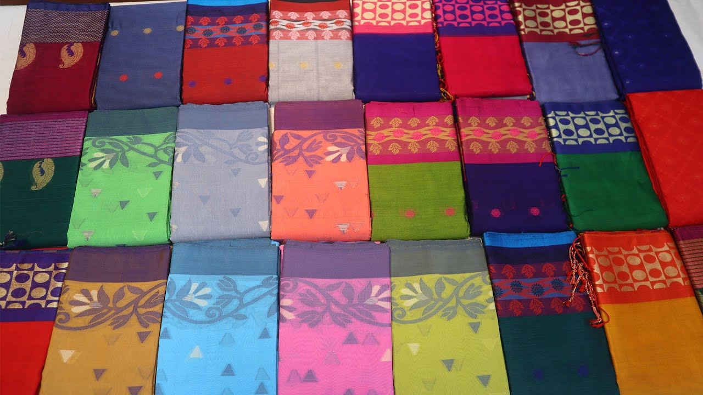
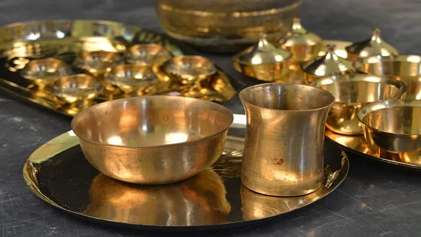
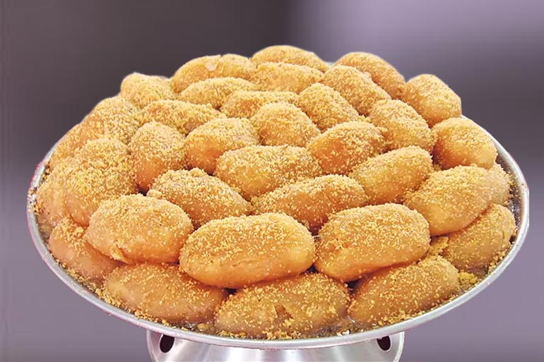

টাঙ্গাইল জেলা
টাঙ্গাইল জেলা
জেলার ঐতিহ্য :
টাঙ্গাইল একটি ঐতিহ্যবাহী জনপদ। বহু অতীত ঐতিহ্য আর বাংলার চির পরিচিত লোক-সংস্কৃতি ইতিহাসে ক্রমধারার উত্তরাধিকারী। প্রাচীন ইতিহাস-ঐতিহ্যে আর লোক-সাহিত্য ও সংস্কৃতির ঐতিহ্যে টাঙ্গাইল জেলার অবস্থান অনেক উঁচুতে। টাঙ্গাইলের লোক-ঐতিহ্য নিয়েও প্রবাদ বচন রচিত হয়েছে। যেমন- ‘চমচম, টমটম ও শাড়ি, এই তিনে টাঙ্গাইলের বাড়ি।’ প্রবাদ প্রবচনের ছড়াটিতে টাঙ্গাইলের তিনটি লোক ঐতিহ্যের কথা উঠে এসেছে। টাঙ্গাইলের তৈরি চমচম মিষ্টি আর তাঁতের শাড়ি পৃথিবী খ্যাত। টমটম গাড়িও একদা ছিল টাঙ্গাইলের লোক ঐতিহ্যের উল্লেখযোগ্য যানবাহন।
টাঙ্গাইল তথা বাংলাদেশের লোক ঐতিহ্যের দুইটি প্রধান নিদর্শন হলো- মাটির মৃৎপাত্রের ফলক আর নক্শী কাঁথা। নকশী কাঁথার উপর বাণিজ্যিক ভূত চেপেছে আর মৃৎ ফলক হিন্দুয়ানী বলে বর্জিত। ফলে আমাদের লোক-ঐতিহ্যগুলো কালের গর্ভে হারিয়ে যাচ্ছে। তাছাড়া টাঙ্গাইলের কাঁসা-পিতল, বাঁশ-বেতের তৈরি তৈজষপত্রগুলোও খ্যাতির দাবীদার। টাঙ্গাইলের লৌকিক খেলাধুলোগুলোও লোক-ঐতিহ্যের উল্লেখযোগ্য উপাদান। তাছাড়া টাঙ্গাইলের ভূখন্ডে কয়েকটি মুসলিম ঐতিহ্য এবং হিন্দু সম্প্রদায়ের ও উপজাতির ঐতিহ্যও রয়েছে। মুসলিম ঐতিহ্যের মধ্যে আটিয়ার মসজিদ, ধনবাড়ির মসজিদ ও মাজার, কদিম হামজানির মসজিদ, খামার পাড়ার মসজিদ ও মাজার প্রভৃতি। হিন্দু ঐতিহ্যের মধ্যে গুপ্ত বৃন্দাবন, পাকুটিয়ার সৎসঙ্গ আশ্রম, বারো তীর্থ, আনন্দ মঠ ইত্যাদি। আর টাঙ্গাইলের গারোদের ওয়ানগালার ঐতিহ্যও কম নয়।
টাঙ্গাইলের জনপদে রাজা-জমিদারদের বাড়িরও একটা ঐতিহ্য আছে। একেক রাজা-জমিদার তাদের মনের মাধুরী দিয়ে তার বাসস্থান নির্মাণ করেছেন। শুধু তাই নয় বাঙালীদেরকে শিক্ষা দান করতে টাঙ্গাইলের জমিদারদের অবদান অপরিসীম।
সেন আমলে প্রাচীন সভ্যতার ঐতিহ্য টাঙ্গাইল অঞ্চলে লুকায়িত রয়েছে। যেমন কালীদাস গ্রামে কালিদাস পন্ডিতের পুকুর। আর বায়ান্ন খাদা জমি নিয়ে রাধাকৃষ্ণ গোপিনীদের লীলা ভূমি গুপ্ত বৃন্দাবন। এখনো সাদৃশ্য ঐতিহ্যবাহী তমাল গাছ আর কাঠের যুগল রাধা-কৃষ্ণের মূর্তি। পাশেই প্রাচীন পুকুর। প্রবাহিত র্ঝনা ধারার পাশে এখনো বিরাট পাথরের স্ত্তপ জেগে আছে। কৃষ্ণ বিরহে আজও বিরহী রাধার আকুতি প্রতিধ্বনিত হয় এই গুপ্ত বৃন্দাবনে। তাছাড়া কালিয়া, মহানন্দপুর, কীর্ত্তন খোলা, প্রতিমা বংশী, দাড়িয়াপুর, শহর গোপিনাথপুর, রতনগঞ্জ, বেহুলা, লক্ষ্ণিদর, গড় গোবিন্দপুর প্রভৃতি স্থানগুলো ঐতিহ্যের শিরোনাম।
টাঙ্গাইলের কয়েকটি ঐতিহ্য নিম্নরূপ :
তাঁত শিল্প/ টাঙ্গাইল শাড়ী :
বাংলাদেশের তাঁত শিল্পের ইতিহাস অতি প্রাচীন। বাংলাদেশের অন্যান্য অঞ্চলের ন্যায় টাঙ্গাইল জেলা সুপ্রাচীন ঐতিহ্যের উত্তরাধিকার। এই শিল্পের সাথে জড়িত আছে এদেশের সংস্কৃতি। আর তাঁত শিল্প আমাদের অন্যতম ঐতিহ্যের ধারক ও বাহক। দেশের সর্ববৃহৎ কুটির শিল্প বা লোকশিল্পও এটি। টাঙ্গাইল জেলার তাঁত শিল্প সেই সর্ব বৃহৎ শিল্পের অন্যতম অংশীদার।
প্রাচীন কাল থেকে টাঙ্গাইলের দক্ষ কারিগররা তাদের বংশ পরম্পরায় তৈরি করছেন নানা জাতের কাপড়। আর কাপড় তৈরিতে লাগে সূতো। সূতো তৈরি হয় তুলো থেকে। টাঙ্গাইল জেলার প্রাচীন অঞ্চল মির্জাপুর উপজেলা বিখ্যাত গবেষক জেম্স টেলর মির্জাপুরের তুলোর কথা লিখেছেন। এখানে বাপ্তা হাম্মাম ও অন্যান্য পাঁচমিশালী বস্ত্রের সূতো কাটা হতো তুলো থেকে। তা ছাড়া বিখ্যাত পর্যটক ইবনে বতুতা ও হিউয়েন সাং- এর ভ্রমণ কাহিনীতে টাঙ্গাইলের বস্ত্র শিল্প অর্থাৎ তাঁত শিল্পের উল্লেখ রয়েছে। সে দিক থেকেও বলা যায় টাঙ্গাইলের তাঁত শিল্পের ঐতিহ্য অতি প্রাচীন, এটি আমাদের হাজার বছরের ঐতিহ্য, কৃষ্টি ও সংস্কৃতি। বর্তমানে টাঙ্গাইলের তাঁতের শাড়ির জন্যই টাঙ্গাইলের সুনাম বা পরিচিতি দেশের সীমা ছাড়িয়ে বিশ্বব্যাপী।
তাঁত শিল্পের বৈপ্লবিক পরিবর্তন এনেছে টাঙ্গাইলের সফট সিল্ক ও কটন শাড়ি। এই শাড়ি বুনন ও ডিজাইন দৃষ্টি কাড়ে। টাঙ্গাইলের শাড়ির বৈশিষ্ট্য হলো- পাড় বা কিনারের কারু কাজ। রেশমী সূতী মিশ্রনের সূতো শাড়ি ও লুঙ্গি প্রস্ত্তত হয়ে থাকে। এ ছাড়াও টাঙ্গাইলের তাঁতিরা তাঁতের শাড়ির, লুঙ্গি, গামছা ও চাদর তৈরি করে থাকে।
টাঙ্গাইলের তাঁতিরা একদা মসলিন শাড়ি বুনতেন বলে শোনা যায়। এক সময় দিল্লির মোগল দরবার থেকে বৃটেনের রাজ প্রাসাদ পর্যন্ত এই মসলিনের অবাধ গতি ছিল। বিদেশী বণিক চক্রের ষড়যন্ত্রের শিকার হয়ে মসলিন কাপড় কালের প্রবাহে হারিয়ে গেছে। কিন্তু তার সার্থক উতরাধিকারী হয়ে আজও টিকে রয়েছে টাঙ্গাইলের জামদানী, বেনারসী ও তাঁতের শাড়ি।
মুসলমান তাঁতীদেরকে বলা হতো জোলা। এই জোলাতাঁতীদের সংখ্যাধিক্য ছিল টাঙ্গাইল, কালিহাতী ও গোপালপুর এলাকায়। আবারযুগী বা যুঙ্গীদের নাথপন্থী এবং কৌলিক উপাধি হিসেবে দেবনাথ বলা হয়।ক্ষৌম বস্ত্র বো মোটা কাপড় বোনার কাজে এদের একচেটিয়া অধিকার ছিল। সূতোকাটার চরকা এদের প্রত্যেক পরিবারেই ছিল এবং পুত্র কন্যাসহ পরিবারেরনারী-পুরুষ সবাই সূতো কাটা ও কাপড় বুনতে সারাদিন ব্যস্ত থাকতো।টাঙ্গাইল কালিহাতী ও গোপালপুর এলাকায় যুগী সম্প্রদায়ের বসতি ছিল।যুগীরা ক্ষৌম, গামছা, মশারী তৈরি করে প্রায় স্বাধীন ভাবেই ব্যবসাচালাত। আরো জানা যায় টাঙ্গাইলের হিন্দু তাঁতীদের মৌলিক উপাধি বসাক।বাজিতপুর ও নলসুন্দা গ্রামেই এদের সংখ্যাধিক্য। কিন্তু বল্লা ওরতনগঞ্জে মুসলিম কারিগর (জোলা) সংখ্যায় হাজার খানেক এবং অনেকেই বেশ ধনসম্পদশালী।
ইতিহাস থেকে জানা যায়, বসাক সম্প্রদায়েরতাঁতিরাই হচ্ছে টাঙ্গাইলের আদি তাঁতি অর্থাৎ আদিকাল থেকেই এরাতন্তুবায়ী গোত্রের লোক। এদেরকে এক শ্রেণীর যাযাবর বলা চলে- শুরুতে এরাসিন্ধু অববাহিকা থেকে পশ্চিম বঙ্গের মুর্শিদাবাদে এসে তাঁতের কাজ শুরুকরেন। কিন্তু সেখানকার আবহাওয়া শাড়ির মান ভালো হচ্ছে না দেখে তারানতুন জায়গার সন্ধানে বের হয়ে পড়েন, চলে আসেন বাংলাদেশের রাজশাহীঅঞ্চলে। সেখানেও আবহাওয়া অনেকাংশে প্রতিকূল দেখে বসাকরা দু’দলে ভাগহয়ে একদল চলে আসে কিশোরগঞ্জের বাজিতপুর, অন্যদল ঢাকার ধামরাইয়ে। তবেএদের কিছু অংশ সিল্কের কাজের সঙ্গে যুক্ত হয়ে রাজশাহীতেই থেকে যায়।ধামরাইয়ে কাজ শুরু করতে না করতেই বসাকরা নিজেদের মধ্যে দ্বন্দ্বসংঘাতে লিপ্ত হয়ে পড়ে। ফলে ভাগ হয়ে অনেক বসাক চলে যান প্রতিবেশী দেশেরচোহাট্টা অঞ্চলে। এর পর থেকে বসাক তাঁতিরা চৌহাট্টা ও ধামরাইয়া’ এদু’গ্রুপে স্থায়ীভাবে বিভক্ত হয়ে পড়েন। ধামরাই ও চৌহাট্টায় তন্তুর কাজভালোই হচ্ছিল। তবে আরো ভালো জায়গায় খোঁজ করতে করতে অনেক বসাকটাঙ্গাইলে এসে বসতি স্থাপন করেন। এখানকার আবহাওয়া তাদের জন্য অনকূলহওয়াতে পুরোদমে তাঁত বোনার কাজে লেগে পড়েন। টাঙ্গাইলে বংশানুক্রমেযুগের পর যুগ তারা তাঁত বুনে আসছেন। এক কালে টাঙ্গাইলে বেশির ভাগএলাকা জুড়ে বসাক শ্রেণীর বসবাস ছিলো, তারা বসাক সমিতির মাধ্যমেঅনভিজ্ঞ তাঁতিদেরকে প্রশিক্ষণ দান ও কাপড়ের মান নিয়ন্ত্রন করতেন। ১৯৪৭খ্রিস্টাব্দে দেশভাগ ও ১৯৭১ খ্রিস্টাব্দের স্বাধীনতা যুদ্ধের পর অনেকবসাক তাঁতি ভারত চলে যান। এ সময় বসাক ছাড়াও অন্যান্য সম্প্রদায়েরলোকেরাও তাঁত শিল্পের সঙ্গে গভীরভাবে জড়িয়ে পড়েন। তারা বসাক তাঁতিদেরমতোই দক্ষ হয়ে উঠেন।
টাঙ্গাইল জেলার ১১টি উপজেলা আর ১টি থানার মধ্যেটাঙ্গাইল সদর, কালিহাতী, নাগরপুর, সখীপুর উপজেলা হচ্ছে তাঁতবহুলএলাকা। তাছাড়া ভূঞাপুর উপজেলায়ও তাঁত শিল্প রয়েছে।
টাঙ্গাইল সদর উপজেলার তাঁতবহুল গ্রামগুলহচ্ছে- বাজিতপুর, সুরুজ, বার্থা, বামনকুশিয়া, ঘারিন্দাগোসাইজোয়াইর, তারটিয়া, চন্ডি, নলুয়া, দেওজান, এনায়েতপুর, বেলতাগড়াসিন, সন্তোষ, নলসুন্দা, কাগমারী প্রভৃতি।কালিহাতী উপজেলাবল্লা, রামপুর, বাংরা, সহদেবপুর, ভূক্তা, আকুয়া, ছাতিহাটি, আইসরারতনগঞ্জ কোবডোরা প্রভৃতি।
দেলদুয়ার উপজেলা পাথরাইল, নলসোধা, চন্ডি, বিষ্ণুপুর প্রভৃতি। এছাড়া গোপালপুর ও ভূঞাপুর উপজেলার কিছু কিছু গ্রামে তাঁত শিল্প আছে। এ সকল গ্রামে দিন রাত শোনা যায় মাকুর মনোমুদ্ধকর খটখট শব্দ। মাকুর খটখটির পাশাপাশি তাঁতিদের ব্যতিব্যস্ত নিরস্তর হাতে নিপুর শাড়ি বোনার দৃশ্য ও সত্যিই মনোমুগ্ধকর। টাঙ্গাইলের তাঁতের সঙ্গে প্রায় পাঁচ লাখ লোকের জীবন জীবিকা জড়িত। আর টাঙ্গাইলে তাঁত রয়েছে লক্ষাধিক। এই লক্ষাধিক তাঁতের সবগুলোতেই আবার টাঙ্গাইলের শাড়ি তৈরী হয় না। টাঙ্গাইলের ঐতিহ্যবাহী শাড়ি তৈরি হয় এ রকম তাঁতের সংখ্যা টাঙ্গাইলে ২০ হাজারেরও কম। আর এই ঐতিহ্যবাহী শাড়ি তৈরি হয় প্রধানত বাজিতপুর, পাথরাইল, নলসুন্দা, চন্ডি, বিষ্ণপুর ও বিন্নাফৈর গ্রামে।
টাঙ্গাইলের তাঁতের শাড়ি তৈরি করতে হাতের কাজ করা হয় খুব দরদ দিয়ে,গভীর মনোসংযোগের সাথে অত্যন্ত সুক্ষ্ণ ও সুদৃশ্য ভাবে। পুরুষেরা তাঁত বোনে; আর চরকাকাটা, রঙকরা, জরির কাজে সহযোগিতা করে বাড়ির মহিলারা। তাঁতিরা মনের রঙ মিশিয়ে শাড়ির জমিনে শিল্প সম্মতভাবে নানা ডিজাইন করে বা নকশা আঁকে, ফুল তোলে।
টাঙ্গাইলের শাড়ির বৈশিষ্ট্য হলো- পাড় বা কিনারের কারুকাজ। টাঙ্গাইলের শাড়ি বোনার তাঁত দু’ধরনেরঃ (১) চিত্তরঞ্জন (মিহি) তাঁত, (২) পিটলুম (খটখটি) তাঁত। এ দু’ধরনের তাঁতেই তৈরি করা হয় নানা রং ও ডিজাইনের নানা নামের শাড়ি। যেমন- জামদানী বা সফ্ট সিল্ক, হাফ সিল্ক, টাঙ্গাইল বি.টি, বালুচরি, জরিপাড়, হাজারবুটি, সূতিপাড়, কটকি, স্বর্ণচুড়, ইককাত, আনারকলি, দেবদাস, কুমকুম, সানন্দা, নীলাম্বরী, ময়ুরকন্ঠী এবং সাধারণ মানের শাড়ি।
শাড়ির বিভিন্ন নাম ও মান, হাতের কাজ, শাড়ির জমিনের রঙভেদে দাম ও ভিন্ন রকম-সর্বনিম্ন দু’শত টাকা থেকে শুরু করে ৫০ হাজার টাকা পর্যন্ত দামে বিক্রি হয়ে থাকে। এর মধ্যে জামদানি বা সফ্ট সিল্কের দাম সবচেয়ে বেশি। জামদানি শাড়ি তৈরি করা হয় আন্তর্জাতিক মান সম্পন্ন ভাবে। এ শাড়ি তৈরি করার জন্য তাঁতিরা ১০০ কাউন্টের জাপানি সুতা ব্যবহার করে থাকেন। এ ছাড়া অন্যান্য শাড়ি তৈরি করতেও ১০০ কাউন্টের সূতা ব্যবহার করা হয়। মাঝে মাঝে নারায়নগঞ্জের সংযোগ শিল্পে প্রস্ত্ততকৃত ৮০, ৮২ ও ৮৪ কাউন্টের সূতাও ব্যবহার করে থাকে।
দেশ ভাগের পূর্বে টাঙ্গাইলের তাঁতের শাড়ির বাজার বসতো কলকাতায়। টাঙ্গাইলের বিভিন্ন অঞ্চলের তাঁতিরা চারাবাড়ি ঘাট, পোড়াবাড়ি ঘাট, নলছিয়া ঘাট ও সুবর্ণখালী বন্দর থেকে স্টিমার লঞ্চ ও জাহাজে চড়ে কলকাতায় যেতেন। কলকাতা তথা পুরোপশ্চিম বঙ্গের শাড়ি ব্যবসায়ীরা কিনে নিত এসব সুন্দর সুন্দর ডিজাইনের তাঁতের শাড়ি।
দেশ ভাগের পর হতে টাঙ্গাইল তাঁতের প্রধান হাট হচ্ছে টাঙ্গাইলের বাজিতপুর। বাজিতপুর হাট টাঙ্গাইল মূল শহর থেকে দেড় কিলোমিটার দক্ষিণে অবস্থিত। সপ্তাহের প্রতি সোম ও শুক্রবার হাট বসে। ভোর রাত হতে এখানে হাট শুরু হয়, সকাল ৯-১০টা পর্যন্ত চলে হাটের ব্যতিব্যস্ততা এবং বেচাকেনা। এ হাটের বেশির ভাগ ক্রেতারাই মহাজন শ্রেণীর। মহাজনরা এই হাট থেকে পাইকারি দরে কাপড় কিনে নিয়ে সারা দেশের বিভিন্ন বড় বড় মার্কেটে, শপিং মলে, ফ্যাশন হাউস গুলোতে সাপ্লাই দেন। মহাজনদের পাশাপাশি বিভিন্ন জেলার উচ্চপদস্থ সরকারি কর্মকর্তা, ধনাঢ্য ব্যবসায়ী ও আমলাদের স্ত্রী-কন্যারাও এ হাট থেকে তাদের পছন্দের শাড়ী কিনে নিয়ে যান। তবে ঢাকা ও বিভিন্ন বিভাগীয় শহর ভিত্তিক ফ্যাশন হাউস গুলোই টাঙ্গাইল শাড়ির বড় ক্রেতা ও সরবরাহকারী।
পৃথিবীর বিভিন্ন দেশ, যেমন- ইউরোপ, আমেরিকার বিভিন্ন দেশ, জাপান, সৌদিআরব, ভারতের বিভিন্ন রাজ্যসহ পশ্চিম বাংলায় টাঙ্গাইলের তাঁতের শাড়ির ব্যাপক কদর থাকলেও এ শাড়ি আন্তর্জাতিক বাজারে মার খাচ্ছে নানা কারণে- (১) দামের জন্য (কাঁচামালের সরবরাহের সহজলভ্যতা না থাকা, কাঁচামালসহ তাঁত মেশিনের বিভিন্ন যন্ত্রাংশের দাম বেড়ে যাওয়ার কারণে টাঙ্গাইল শাড়ি উৎপাদন খরচ বেশি পড়ে যায়)। (২) ভারতীয় শাড়ির আগ্রাসন (সেখানে কাঁচামালের সহজলভ্যতা ও সূতার স্বল্প মূল্যের জন্য টাঙ্গাইল তাঁতের শাড়ির চেয়ে ভারতের শাড়ি দামে সস্তা হয়ে থাকে বিধায় অনেক ক্রেতাই সে দিকে ঝুকে পড়েছে)। (৩) টাঙ্গাইল শাড়ি বিপণন ব্যবস্থাটি মহাজনি চক্রের হাতে বন্দি, ফলে বিপণন ব্যবস্থা সুষ্ঠু ভাবে পরিচালিত হচ্ছে না। এ ছাড়া দেশ ভাগ,
পাকিস্তান-ভারত সাম্প্রদায়িক দাঙ্গা, ১৯৭১ খ্রিস্টাব্দের মুক্তিযুদ্ধের পর টাঙ্গাইল ছেড়ে ভারতে চলে যাওয়া বসাক তাঁতিরা সেখানে টাঙ্গাইল শাড়ির কারিকুলামে যে শাড়ি তৈরি করছে তা টাঙ্গাইল শাড়ির নাম ভাঙিয়ে বিশ্ববাজার দখলের চেষ্টা চালাচ্ছেন। তবে এতো প্রতিকূলতার পরেও টাঙ্গাইলের তাঁতের শাড়ি তার হারানো বাজার পুনরুদ্ধারে সক্ষম হচ্ছে। কারণ টাঙ্গাইল শাড়ি মানেই ভিন্ন সূতায়, আলাদা তাঁতে তৈরি আলাদা বৈশিষ্ট্যের শাড়ি। এর নকশা, বুনন, ও রংয়ের ক্ষেত্রে রয়েছে ব্যাপক বৈচিত্রতা। অন্যান্য শাড়ি ১০ হাত থেকে সর্বোচ্চ ১১ হাত মাপে তৈরি হয়ে থাকে, আর টাঙ্গাইলের তাঁতের শাড়ি তৈরি হয় ১২ হাত মাপে। এ শাড়ি নরম মোলায়েম এবং পরতে আরাম, টেকেই অনেক দিন। এছাড়া সময় ও চাহিদার সাথে তাল রেখে দিন দিন পাল্টে যাচ্ছে টাঙ্গাইল শাড়ির আকর্ষণ ও নক্শার ব্যঞ্জনা।
টাঙ্গাইলের বাজিতপুর, নলসুন্দা, সন্তোষ ও কাগমারী গ্রামে প্রস্ত্তত হয় ধূতি, শাড়ি, লুঙ্গি। কালিহাতীর বল্লা রতন গঞ্জ ও কোবডোহরা গ্রামে লুঙ্গি, গামছা ও ধূতি। কোকডোহরা, ধুতি মিহি ও মোলায়েম। গায়ের বিছানার চাদর, আলোয়ান তৈরি হয় রতন গঞ্জ। বৈন্নাফৈর গ্রামে উৎকৃষ্ট তাঁতের কাপড় প্রস্ত্তত হয়। টাঙ্গাইলের রেশমী সূতী ও মিশ্রনের সূতোর শাড়ি ,লুঙ্গি প্রস্ত্তত হয়ে থাকে। তবে গামছা ও মশারী তৈরিতে যুগী বা দেবনাথ সম্প্রদায় আজো একচেটিয়া অধিকার বজায় রাখতে পেরেছে।
টাঙ্গাইল শাড়ির নতুনত্ত্বের অন্যতম সফল তাঁতিদের মধ্যে বাজিতপুরের আনন্দ মোহন বসাক, সীতানাথ বসাক, চন্ডি গ্রামের নীল কমল বসাক, মনে মন্টু; নলসুন্দা গ্রামের হরেন্দ্র বসাক, পাথরাইল গ্রামের রঘুনাথ বসাক, আনন্দ, গোবিন্দ, সুকুমার বসাক, খুশি মোহন বসাক এর নাম উল্লেখযোগ্য। তারা জানান টাঙ্গাইলের শাড়ি বুনোনের মূল কাজ একেবারেই আলাদা। অনেক পুরোনো একটা ঐতিহ্যের ধারায় চলে একাজ। সেই জ্ঞান ও নিষ্ঠা ছাড়া আসল টাঙ্গাইলের শাড়ি তৈরি করা যায় না। আসল টাঙ্গাইলের শাড়ি তৈরির জন্য এর তাঁতী বা কারিগরদের শিল্পী হয়ে উঠতে হয়। আমাদের টাঙ্গাইলে সেই শিল্পী তাঁতি আছে। তাই টাঙ্গাইলের তাঁত শিল্প ও তাঁতের শাড়ির এতো সুখ্যাতি।
কাঁসা ও পিতল শিল্প :
টাঙ্গাইলকে প্রসিদ্ধ করেছে কাসা ও পিতল শিল্প। এক সময় টাঙ্গাইলের সমৃদ্ধশালী ব্যবসা ছিলো এটি। শুধু টাঙ্গাইল নয় বাংলাদেশ ও ভারতের পশ্চিমবঙ্গে এই শিল্পের সুনাম ছিল। টাঙ্গাইলের কাঁসা ও পিতলের তৈরি তৈজস পত্রের ব্যাপক চাহিদা ছিলো সারা দেশে। দেশের চাহিদা মিটিয়েও কাঁসা ও পিতলের তৈজসপত্র বিদেশেও রফতানি হতো। বিশেষ করে এগুলো ছিলো ভারত বিখ্যাত। অবিভক্ত বাংলায় একদিন প্রসিদ্ধ ছিলো টাঙ্গাইলের তামা, কাঁসা ও পিতল শিল্প। এটি বিগলন ঢালাই প্রযুক্তির অন্তর্গত। আর সুদৃশ্য কারুকার্য ও অনুপম গুণগত মানের জন্যই টাঙ্গাইলের কাঁসা ও পিতলের তৈরি তৈজসপত্র এতটা প্রসিদ্ধ হয়ে উঠেছিলো।
কাঁসা ও পিতলের অপূর্ব শিল্প কর্মের জন্য ব্রিটিশ সরকার কাঁসা শিল্পীদের মধ্যে নাম করা অনেককেই প্রশংসা ও পদকে ভূষিত করেছেন। এদের মধ্যে প্রয়াত মধুসূদন কর্মকার, গণেশ কর্মকার, বসন্ত কর্মকার, যোগেশ কর্মকার, হারান কর্মকার উল্লেখযোগ্য।
টাঙ্গাইলের প্রধান কাগমারীর কাঁসা, পিতল ও তামার ধাতুশিল্প আজো নিশ্চিহ্ন হয়ে যায়নি। এখনো টাঙ্গাইলের কাগমারীসহ জেলার নানা গ্রামাঞ্চলে এই কাঁসা ও পিতল শিল্পীরা তৈরি করছে নানা দ্রব্যাদি। ব্যাপক প্রসিদ্ধ ও চাহিদার ভিত্তিতে টাঙ্গাইলের বিভিন্ন স্থানে কাঁসা ও পিতলের শিল্প গড়ে উঠলেও কাগমারী, মগড়া ও সাকরাইল গ্রাম ছিলো বেশি প্রসিদ্ধ। এক সময় এ সকল গ্রামে শতশত পরিবার কাঁসা ও পিতল শিল্পী ছিলো। দিন রাতে তাদের কাঁসা পেটানোর শব্দে গ্রামগুলো মুখর থাকতো। হিন্দুদের মধ্যে কর্মকার সম্প্রদায়েরাই এ শিল্পের সঙ্গে বংশানুক্রমে জড়িত। টাঙ্গাইলের কর্মকারগণ অত্যন্ত সুনিপূণ কৌশলে নিরলস শ্রম দিয়ে আজো তৈরি করছে তামা, কাঁসা ও পিতলের থালা, বাটি, কলসী, গ্লাস, জগ, ঝারি, বদনা, ঘটি, লোটা, পঞ্চ প্রদীপদান, মোমবাতিদান আগর বাতিদান, কুপি, চামচ, কাজলদানী, ডেকচি, ডেগ, বোল, খুন্তি, সড়তা, বাটি, পুতুল, ঝুনঝুনি, করতাল, মেডেলসহ প্রভৃতি জিনিস পত্র।
এক কালে টাঙ্গাইল অঞ্চলের জমিদার ও ভূ-স্বামীগণের বড় তৈজসপত্র ছিলো এ গুলো। এদেরই সহায়তায় এসব কারিগর সমাজ নিত্য নতুন জিনিস তৈরি করেছে। প্রভুর মনোরঞ্জনের জন্য। জমিদার গণ ও ছিলেন বৈচিত্র প্রয়াসী তারাও চাইতেন নানা কারুকার্য খচিত কাঁসার বাসনপত্র উপযুক্ত সহায়তা এবং সমাদরের অভাবে এই শিল্প অন্ধকারে ধূকছে। আজ বিয়ে-শাদী, অন্নপ্রাশন ও সুন্নতে খতনা কিংবা সে ধরনের কোন অনুষ্ঠানে কেউ পিতলের কলসী, কাঁসার জগ, গ্লাসও চামচ উপহার দেয় না। এক সময় কাঁসা ও পিতলের তৈরি জিনিসপত্র বিয়ে, মুসলমানিসহ বিভিন্ন সামাজিক অনুষ্ঠানে সেরা উপহার হিসেবে বিবেচিত হতো।
হাজার বছরের পুরনো এ শিল্প ইতিহাসে প্রমাণ আছে। গ্রাম সমবায়ে কাংস্যকার, কাংস্যবণিক ইত্যাদি বৃত্তিধারী শ্রেণী ছিল। পাঠান, মোগল ও বৃটিশ শাসনামলে কাংস্যকার যখন যে রূপ পৃষ্ঠপোষকতা পেয়েছিল, সেরূপ বিকাশ লাভ করতে পেরেছিলো। কাগমারীতে যারা তামা, পিতল, কাঁসা শিল্পের সাথে জড়িত তাদের বংশগত উপাধি কর্মকার। কাংস্যকার বা কাংস্যবণিক বলে কাউকে কাঁসা শিল্পের সাথে জড়িত দেখা যায় না। তবে কাগমারী কাংস্য শিল্পের সুনাম ছিল এবং এখনো আছে। টাঙ্গাইলের বরাইল ও কাগমারীতে পিতলের কাজের প্রধান্য রয়েছে। টাংাগইলের কাগমারী ও মগরা দুটি গ্রামে উপরোল্লোখিত জিনিস ছাড়া আরো তৈরি হয় কাঁসার ঘণ্টা, জয়ঢাক, তামার কুশা-কুশি, টাট পুষ্পাধার ইত্যাদি।
এছাড়া দেশের স্বাধীনতার পর চোরাই পথে ব্যাপকভাবে এখানকার কাঁসা ও পিতলের তৈরির জিনিস পত্র ভারতে পাচার হতে থাকা এবং অবস্থার পরিপ্রেক্ষিতে এই শিল্পের সাথে সংশ্লিষ্ট অনেক দক্ষ কারিগর দেশ ত্যাগ করাতে এই শিল্পের উপর বিপর্যয় নেমে আসে। এখন এই শিল্পের সাথে জড়িত কর্মকার সম্প্রদায়ের শতশত পরিবার মানবেতর জীবন যাপন করছে। টাঙ্গাইলের কাগমারী ও মগরা দু’টি গ্রামে বাস করে অনাধিক ৫০টি পরিবার। তারা কেউ কেউ বেছে নিয়েছে অন্য পেশা। ফলে কমে যাচ্ছে কাঁসা ও পিতল শিল্পীর সংখ্যা। টাঙ্গাইল জেলা সদরে এই শিল্পের দোকান থাকলেও বেচাকিনি নাই বললেই চলে। তাই এই শিল্পের মন্দাভাব দিন দিন বাড়ছে। এধারা অব্যাহত থাকলে এবং সরকারি ভাবে উদ্যোগ না নিলে টাঙ্গাইলের প্রাচীন ও ঐতিহ্যাবাহী এ লোক শিল্পটি কালের করাল গ্রাসে হারিয়ে যাবে এতে কোন প্রকার সন্দেহ নেই।
বাঙালী রমনীর কণ্ঠে ধ্বনিত হবে না নানা রকমের মিষ্টি সুরের প্রেমের লোক গান। কতই না গান রচিত হয়েছিল কাঁসা ও পিতল শিল্প নিয়ে।
পরিশেষে বলা যায়, মহাজনী পুঁজি প্রবেশ লাভ করেছে এ লোক শিল্পে। এতে কারিগর শ্রেণী দ্রুত মজুরে পরিণত হবে অথচ গড়ে উঠতে পারবে না এ লোক শিল্প শক্ত ভিতের উপর। উপযুক্ত প্রযুক্তির অভাব হেতু ক্ষুদ্রায়তন শিল্পে রূপান্তরিত হওয়ায় সুযোগও আজ অনুপস্থিত।
মিষ্টি শিল্প :
টাঙ্গাইল জেলায় অনেক মিষ্টি তৈরি হয়। যেমন- চমচম, দানাদার, রসগোল্লা, আমৃত্তি, জিলাপী, সন্দেশ, বিভিন্ন প্রকার দই, খির, নই, টানা, খাজা, কদমা বাতাসা ইত্যাদি। কিন্তু টাঙ্গাইলের মিষ্টি শিল্পের কথা বলতে গেলে প্রথমেই পোড়াবাড়ির চমচমের কথা বলতে হয়। মিষ্টির রাজা বলে খ্যাত টাঙ্গাইল জেলার পোড়াবাড়ি নামক স্থানের এই চমচম স্বমহিমায় মহমান্বিত। স্বাদ আর স্বাতন্ত্রের ও এর জুড়ি মেলে না। যার নাম শুনলেই অতুলনীয় স্বাদ ও অর্পূব গন্ধের কথা মনে করে জিহবায় পানি এসে যায়। এই সুস্বাদু ও লোভনীয় চমচম মিষ্টি ও টাঙ্গাইলের একটি অন্যতম ঐতিহ্য। এই ঐতিহ্যপ্রায় ২শ বছরের প্রাচীন। অর্থাৎ ব্রিটিশ আমল থেকে অবিভক্ত ভারতবর্ষসহ বিশ্বের বিভিন্ন দেশে পোড়াবাড়ির চমচম টাঙ্গাইলকে ব্যাপক পরিচিত করেছে। বাংলা, বিহার, ছাড়িয়ে ভারতবর্ষ তথা গোটা পৃথিবী জুড়ে এর সুনাম রয়েছে। মিষ্টির জগতে অপ্রতিদ্বন্দ্বী বিভিন্ন আকারের চমচমের বৈশিষ্ট অতি চমৎকার এর বাইরেরটা দেখতে পোড়া ইটের মতো। লালচে রংয়ের এই সুস্বাদু চমচমের উপরিভাগে চিনির গুড়ো থাকে এর ভিতরের অংশ রসাল নরম। লালচে গোলাপী আভাযুক্ত ভেতরের নরম অংশের প্রতিটি কোষ থাকে কড়া মিষ্টিতে কনায় কনায় ভরা। এই সুস্বাদু চমচম তৈরির মূল উপাদান খাঁটি দুধ, চিনি, পানি, সামান্য ময়দা ও এলাচ দানা হলেও টাঙ্গাইলের চমচমের স্বাদ মূলত টাঙ্গাইলের পানি উপর নির্ভরশীল। অর্থাৎ টাঙ্গাইলের চমচম তৈরির মূল রহস্য এখানকার পানির মধ্যে নিহিত। দেশের অনেক জায়গা থেকেই টাঙ্গাইলের পোড়াবাড়ির কারিগর নিয়ে অনেকেই টাঙ্গাইলের চমচম তৈরির চেষ্টা করেছেন। কিন্তু সফল হতে পারেনি। এই ঐতিহাসিক চমচমের গুণেই মূলত টাঙ্গাইল এটি জেলা হিসেবে জন্ম লাভের পূর্বেই বিশ্ববাজারে পরিচিত লাভ করে।
গবেষকদের মতে দশরথ গৌড় নামে এক ব্যক্তি বৃটিশ আমলে টাঙ্গাইলের যমুনা নদীর তীরবর্তী পোড়াবাড়িতে আসেন। আসাম থেকে আগত এই দশরথ গৌড় যমুনার সুস্বাদু মৃদুপানি ও এখানকার খাঁটি গরুর দুধ দিয়ে প্রথম চমচম তেরি করেন। অতঃপর এখানে ব্যবসা শুরু করেন। তখন পোড়াবাড়ি টাঙ্গাইলের অন্যতম নদী বন্দর ছিলো। ১৬০৮ খ্রিস্টাব্দে মোঘল সুবেদার ইসলাম খাঁ হযরত শাহ জামানকে আতিয়া পরগনার শাসক নিযুক্ত করলে তিনিই পোড়াবাড়ি গ্রামকে নদী বন্দর হিসেবে গড়ে তোলেন। সেই সময়কালে ধলেশ্বরীর পশ্চিম তীরে গড়ে উঠে ছিলো জমজমাট ব্যবসা কেন্দ্র পোড়াবাড়ি বাজার। তখন পোড়া বাড়ি ঘাটে ভিড়তো বড় বড় সওদাগরী নৌকা, লঞ্চ, স্টিমার। ক্রমে ক্রমে পোড়াবাড়ি যখন জনসমাগমে প্রাণ চঞ্চলতায় ভরপুর- তখনই এখানে সুস্বাদু চমচম অর্থাৎ মিষ্টি শিল্প গড়ে ওঠে। রসগোল্লা আবিস্কারে মিষ্টান্ন শিল্পের আসে নবজাগরণ, সমসাময়িককালে পোড়াবাড়ির চমচম ও মুক্তা গাছার মন্ডার সুখ্যাতির শুরু। মন্ডার সাথে পাল্লা দিয়ে শুরু হয় চমচমের ঐতিহ্যের যুগ।
টাঙ্গাইল জেলা সদর থেকে মাত্র ৩ মাইল পশ্চিমে একদা ঘাট ছিল, এর নাম তালান ঘাট। সেখানেও ভিড়তো সউদাগরী নৌকা, জাহাজ ও লঞ্চ। সে সময় দেশী বিদেশী ব্যবসায়ীদের পদচারনায় পোড়াবাড়ি ছিল ব্যস্ত এক ব্যবসাকেন্দ্র। তখন চমচমের ব্যবসাও ছিল জমজমাট। প্রতি সপ্তাহে ১৫০ থেকে ২০০ মন চমচম তৈরি হতো পোড়াবাড়িতে। আবার কারো মতে সে সময় প্রতিদিন প্রায় এক দেড়শমন চমচম তৈরি হতো পোড়াবাড়িতে। উত্তরোত্তর সাফল্য ও চাহিদার কারণে তখন পোড়াবাড়িতে প্রায় ৪০ থেকে ৫০ টি চমচম তৈরির কারখানা গড়ে উঠে যার সাথে প্রায় তিন শতাধিক পরিবারের জীবন ধারা আবর্তিত হয়। সে সময় চমচম মিষ্টি তৈরির সাথে জড়িত ছিল দশরথ গৌড়ের পর পরই রাজারাম গৌড়, কুশাইদেব, নারায়ন, কাকন হালুই, শিবশংকর গৌড়, প্রকাশ চন্দ্র, মদন গৌড় ও মোহন লাল প্রমূখ। তার পরবর্তী প্রজন্ম অর্থাৎ চলমান সময়ে খোকা ঘোষ এবং গোপাল চন্দ্র দাসের নাম বিশেষভাবে উল্লেখযোগ্য। এরা চমচম মিষ্টির ব্যবসায় সাফল্য লাভ করেন। বর্তমানে টাঙ্গাইল শহরের পাঁচ আনি বাজার এই মিষ্টি শিল্পের জন্য বিখ্যাত।
চমচম এখন একটি উপাদেয় মিষ্টান্ন যা যে কোন বয়সের লোকের কাছে লোভনীয়। বিয়ের অনুষ্ঠান, পূজায়, জন্ম দিনে, পরীক্ষায় ফলাফল হলে, চাকরির প্রমোশন হলে, নির্বাচনে জয়ী হলে, নতুন চাকরি হলে, শ্বশুড় বাড়ি বা আত্মীয় বাড়ি যাওয়ার সময় এই চমচম দিয়ে শুভেচ্ছা বিনিময় এখনো সর্বমহলে প্রচলিত।
কালের আবর্তে যমুনার শাখা নদী ধলেশ্বরীর বুকে অসংখ্য চরজেগে উঠে। এতে বন্ধ হয়ে যায় পোড়াবাড়ির নৌপথের ব্যবসা বাণিজ্য। ক্রমে ক্রমে জনবহুল পোড়াবাড়ী হতে থাকে জনশূন্য। এ ঐতিহ্যবাহী চমচম শিল্পকে কেন্দ্র করে এতো লোক জীবিকা নির্বাহ করতো, তারা বেকার হয়ে পড়ে। বেঁচে থাকার তাগিদে তারা অন্য পেশায় চলে যায়। পোড়াবাড়ি বাজারের অবস্থা খুবই করুন। এই বাজারের ৪ থেকে ৫টি ভাঙ্গা চোড়া চমচমের দোকান রয়েছে। যা কেবল মাত্র ঐতিহ্যের স্মৃতি বহন করে চলেছে। বাজার এবং আশে পাশে কয়েকটি বাড়িতে এখনো মিষ্টি তৈরি হয়। তারা ঐ মিষ্টি রাজধানী ঢাকা তাছাড়া দেশের বিভিন্ন শহরে তা সরবরাহ করে থাকে। জয়কালী মিষ্টান্ন ভান্ডার, গোপাল মিষ্টান্ন ভান্ডার ও টাঙ্গাইল পোড়াবাড়ি মিষ্টি ঘরে এখনো নির্ভেজাল পোড়াবাড়ির চমচম পাওয়া যায়।
বর্তমানে টাঙ্গাইলের পাঁচ আনী বাজার ছাড়াও টাঙ্গাইল জেলার বিভিন্ন জায়গায় বিভিন্ন ধরনের মিষ্টি তৈরিও বিক্রি হচ্ছে। যেমন আমির্তি, রসমালাই, রসগোল্লা, সন্দেশ, কালোজাম জিলাপী খাজা বাতাসা, কদমা, নই, টানাবাদাম ইত্যাদি। মির্জাপুর উপজেলা জামুর্কীর সন্দেশ বিখ্যাত। নলিন বাজারের রসগোল্লার খ্যাতি রয়েছে। বাসাইল উপজেলার ফাইলা পাগলার মেলায় কদমার সুনাম আছে। এ ছাড়া টাঙ্গাইলের ঘোষেরা ওপাল সম্প্রদায়ের লোকেরা দানাদার, দই ও ঘি তৈরি করেন। এ দইয়ের খ্যাতিও কম নয়। বগুড়ার দইয়ের চেয়ে স্বাদে ও গন্ধে কোন অংশে কম নয়। বরং কোন কোন ঘোষের দই বগুড়ার দইয়ের চেয়েও ভালো। যেমন- আলমনগরের নীল কমলের দই, ফলদার খোকা ঘোষের দই ও ভূঞাপুরের রমজানের দইয়ের খ্যাতি রয়েছে।
তিহ্যের পোড়াবাড়ির চমচম আজ নানা প্রতিকূলতায় সম্মুখীন। এই মিষ্টি নির্মাতারা ও ব্যবসায়ীরা আর্থিক লাভ থেকে বঞ্চিত হয়ে এ পেশা ছেড়ে অন্য পেশায় চলে যাচ্ছে। এমনি করে চলে গেলে আমাদের ঐতিহ্যবাহী পোড়াবাড়ির চমচম একদিন বিলুপ্ত হয়ে যাবে।
মিষ্টি শিল্পে টাঙ্গাইলের ঘোষ ও পাল সম্প্রদায় বংশানু ক্রমিকভাবে নিয়োজিত আছে। তবে দে, নাগ ইত্যাদি উপাধিধারীদের কোথাও কোথাও মিষ্টান্ন তৈরিতে নিয়োজিত দেখা যায়। টাঙ্গাইলের মোদক উপাধি প্রাপ্তরাও মিষ্টি শিল্পের সাথে জড়িত ছিল, এখনো আছে। মোদক উপাধিধারী হিন্দুরা বংশগতভাবে গুড়, তেল, ময়দা ইত্যাদি দিয়ে তৈরি করে জিলাপি, কদমা, বাতাসা, গজা, খাজা, নই, টানা এবং চিনি সহযোগে খোরমা, মিস্ত্রী, চিনি বা গুড়ে সাজ, মুড়ির মোয়া, ঢেপের মোয়া, ঝুরি, জোয়ারের খইসহ বিভিন্ন উপদানের তৈরি নাড়ু ইত্যাদি।
দুগ্ধজাত দই, ক্ষীর, ঘি, মাখন ইত্যাদি মিষ্টি দ্রব্য তৈরিতে টাঙ্গাইলের সুপ্রাচীন ঐতিহ্য আছে। যে কথা আগেও বলা হয়েছে। টাঙ্গাইল জেলার কালিহাতির নরদই, দেউপুর, নিচনপুর ও এলেঙ্গা। ভূঞাপুরের ফলদা ও ভূঞাপুর সদরে এবং গোপালপুরের মিষ্টি পট্টি আলমনগর ও নলিন বাজরের সুস্বাদু এবং উত্তম দই, ক্ষীর, ঘি, মাখন তৈরি উল্লেখযোগ্য স্থান।